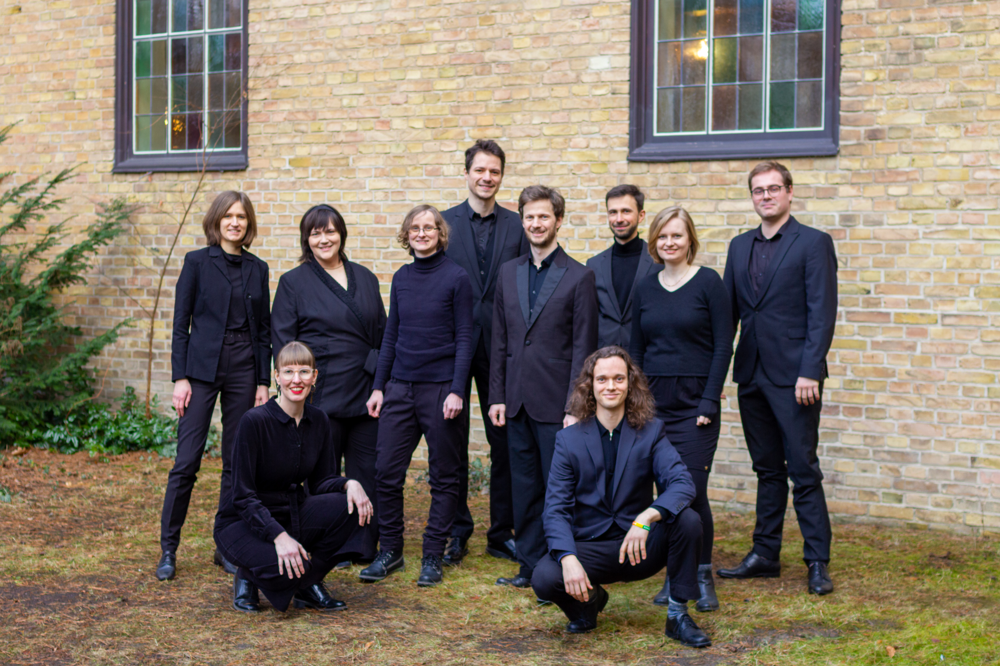
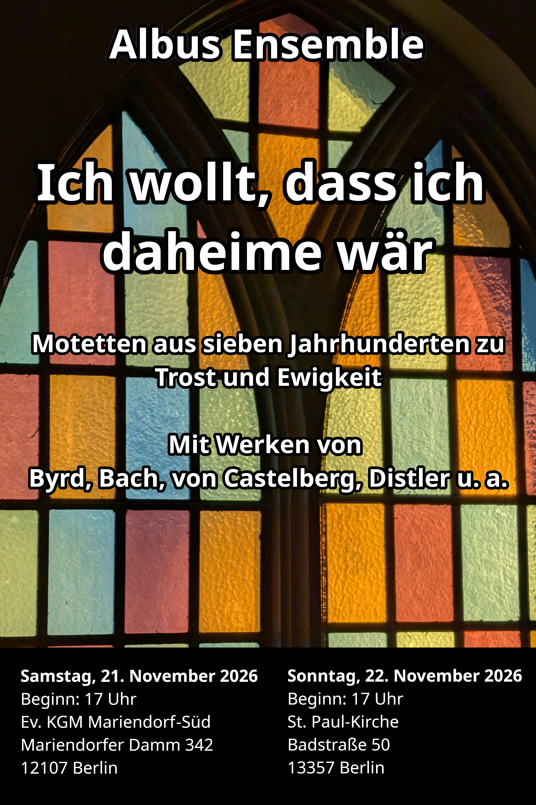

Sa, 21. November 2026, 17:00 Uhr
Ort wird noch bekanntgegeben
So, 22. November 2026, 17:00 Uhr
St.-Paul-Kirche
Badstraße 50
13357 Berlin
Ich wollt, dass ich daheime wär
Motetten aus sieben Jahrhunderten zu Trost und Ewigkeit
In unserem neuen Programm spannen wir einen Bogen über sieben Jahrhunderte Vokalmusik: von Guillaume de Machaut bis Knut Nystedt, von etwa 1300 bis an die Schwelle des 21. Jahrhunderts. So begegnen sich sehr unterschiedliche Klangsprachen, die doch alle um dieselben Fragen kreisen: Abschied, Erinnerung, Hoffnung und das Weitertragen von Trost.
Passend zum Totensonntagswochenende laden wir zu einem Konzert ein, das Raum für Nachdenklichkeit und Zuversicht schafft. Alte und neue Motetten treten miteinander in Dialog und stimmen uns auf eine winterliche Zeit ein, in der Stille, Gemeinschaft und Musik besonders kostbar werden.
Eintritt frei
